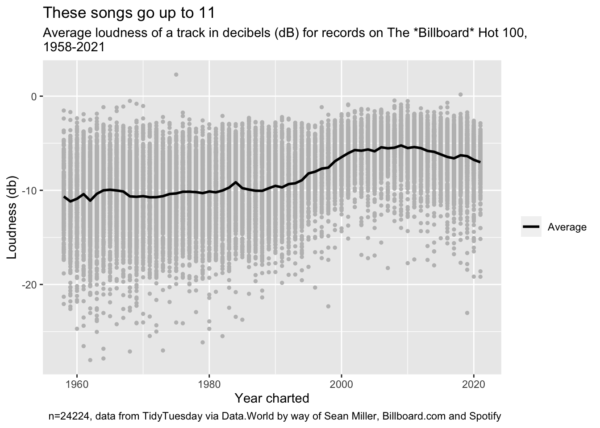

Tidy Tuesday: Billboard Top 100
Laurence Horton
2021-09-14
Data this week comes from Data.World by way of Sean Miller, Billboard and Spotify.
“The Billboard Hot 100 is the music industry standard record chart in the United States for songs, published weekly by Billboard magazine. Chart rankings are based on sales (physical and digital), radio play, and online streaming in the United States.”
(Billboard Top 100, 2021)
There’s around 29,000 unique records in the data set covering the years 1958 to 2021, and around 24,000 of these have Spotify metadata on the songs themselves. We can take a look at how characteristics of songs over time, so, just for this example, I’ve picked tempo in beats per minute (bpm) and loudness (db).
Tempo
Tempo is a value for the pace of a piece of music, here measured in beats per minute. I was curious if records were getting faster, slower or if there was no significant change.
The mean value for beats per minute across the data set is 120. Tempos range from an allegretto average of 114 (1999) to and allegro 126 (2011). Why is 120 bpm a magic number in chart music? I have no idea why, so here’s a reddit thread speculating on possible reasons (awilddeer, 2019).

Here’s what 120 bpm sounds like if you need a reference point (Channel R, 2008).
Loudness
By increasing the audio levels artist and producers hope to make their records stand out, but in doing so they can reduce the fidelity of the music. This is known as the “loudness wars” (Hinkes-Jones, 2013).
Digital formats from the 1980s onward permitted additional techniques to make records sound even louder and we can see an upward trend in the 1990s, peaking in the 2000s, and as push back against loudness came we see a tailing off slightly in the 2010s. But records are still louder than in the days of the 7", and the db range of chart records is noticeably narrower.

Citations
Data
Miller, S. (2021) Billboard Hot weekly charts. data.world https://data.world/kcmillersean/billboard-hot-100-1958-2017
Bibliography
awilddeer (2019, August 29). Why is 120 BPM such a standard [Online Forum Post]. Reddit. https://www.reddit.com/r/musictheory/comments/1majyc/why_is_120_bpm_such_a_standard/
Billboard Hot 100 (n.d.). In Wikipedia. Retrieved September 14, 2021, from https://en.wikipedia.org/w/index.php?title=Billboard_Hot_100&oldid=1044125386
Channel R (2008) 120BPMclicktrack.ogg. English Wikipedia https://commons.wikimedia.org/wiki/File:120BPMclicktrack.ogg This work has been released into the public domain by its author, Channel R. This applies worldwide.
Hinkes-Jones, L. (2013, November 25) The Real Reason Music’s Gotten So Loud. The Atlantic, https://www.theatlantic.com/entertainment/archive/2013/11/the-real-reason-musics-gotten-so-loud/281707/
Code
Horton, L. (2021). #TidyTuesday 2021-09-14 Billboard Top 100. GitHub repository, https://github.com/laurencehorton/tidytuesday/2021-09-29-billboard-top-100 published under Creative Commons Zero v1.0 Universal Licence
Packages
Mock, T. (2021). Tidy Tuesday: A weekly data project aimed at the R ecosystem. https://github.com/rfordatascience/tidytuesday.
R Core Team (2018). R: A language and environment for statistical computing. R Foundation for Statistical Computing, Vienna, Austria. URL https://www.R-project.org/.
Wickham, H., François, R., Henry, L., Müller K. (2021). dplyr: A Grammar of Data Manipulation. R package version 1.0.6. https://CRAN.R-project.org/package=dplyr